Managing Sections
Use this guide to view, create, edit, and delete sections within a course. Sections organize course material into structured modules and are added one at a time using the Add Section form.
| Field | Details |
|---|---|
| Applies to | LMS 365 Administration (course content) |
| Audience | LMS administrators, course administrators |
1.1 View the Section list
Open the Section panel for the course. It lists every section with its author, number of chapters, and status.
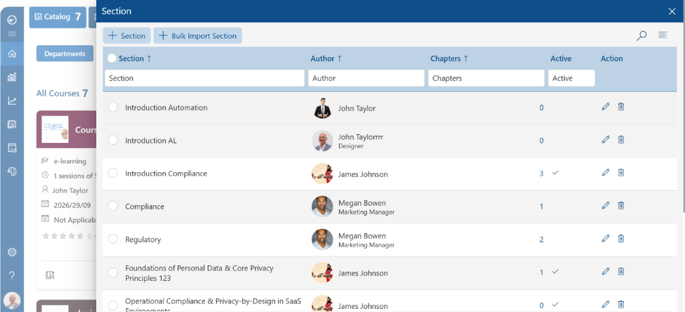
| Column / Control | Description |
|---|---|
| Section | Name of the section. Click the header to sort. |
| Author | Person responsible for the section, shown with photo, name, and job title. |
| Chapters | Number of chapters currently in the section. |
| Active | A tick means the section is active. A blank value means it is inactive. |
| Action | Pencil icon edits the section. Bin icon deletes it. |
| Filter boxes | Type in the box under any column heading to filter the list. |
| Search icon | Opens search across the list (top right). |
| + Section | Opens the Add Section form (see 1.2). |
1.2 Add a Section Manually
- Open the Section panel for the course.
- Select + Section. The Add Section panel opens on the right.
- Enter the Title.
- Choose the Section Author from the Select Author list.
- Enter the Description in the rich-text editor.
- Leave Active switched on if the section should be available, or switch it off to keep it hidden.
- Select Save to save and close, or Save and add more to save and immediately create another section.
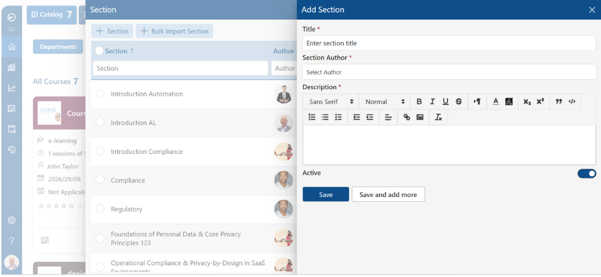
| Field | Required | Notes |
|---|---|---|
| Title | Yes | Short, descriptive name, for example "Compliance" or "Regulatory". |
| Section Author | Yes | Select an existing user from the list. |
| Description | Yes | Supports bold, italic, underline, strikethrough, text colour, sub/superscript, quotes, code, numbered and bulleted lists, indentation, alignment, links, and images. |
| Active | No | On by default. Controls whether the section is active. |
Expected result: The new section appears in the Section list with the chapter count showing 0.
1.3 Edit or Delete a Section
- In the Section list, find the section (use the filter boxes if needed).
- Select the pencil icon in the Action column to edit, change the fields, and save.
- To remove it, select the bin icon and confirm.
Caution: Before deleting a section, check its Chapters count. Sections that contain chapters may affect those chapters. Move or export the chapters first if you still need them.
1.4 Troubleshooting: Sections
| Issue | What to check |
|---|---|
| Cannot save the section | Title, Section Author, and Description are all mandatory. Fill in every field marked with a red asterisk. |
| Author not found in the list | The person must exist as a user in LMS 365. Confirm their account is created and active. |
| Section is not visible to learners | Check that the Active switch is on. Sections with no tick in the Active column are inactive. |
| Section shows 0 chapters | Chapters have not been added yet. See Chapters management below. |
Managing Chapters
Use this guide to view, add, bulk add, bulk delete, and AI-generate chapters. Create the section the chapter belongs to before you begin.
| Field | Details |
|---|---|
| Applies to | LMS 365 Administration (course content) |
| Audience | LMS administrators, course administrators |
2.1 View the Chapter list
Open the Chapters panel for the course to see all chapters and the section each belongs to.
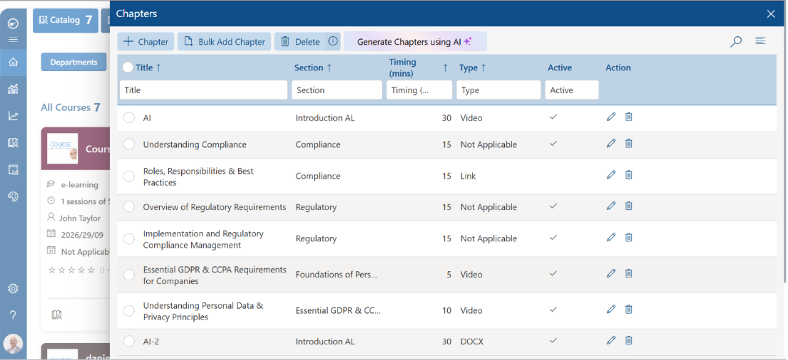
| Column / Control | Description |
|---|---|
| Title | Chapter name. Click the header to sort. |
| Section | The section the chapter belongs to. |
| Timing (mins) | Expected duration of the chapter in minutes. |
| Type | Attachment type, for example Video, DOCX, Link, or Not Applicable. |
| Active | A tick means the chapter is active. |
| Action | Pencil icon edits the chapter. Bin icon deletes it. |
| + Chapter | Adds a single chapter (see 2.2). |
| Bulk Add Chapter | Uploads multiple chapters from a file (see 2.3). |
| Delete | Deletes all selected chapters at once (see 2.4). |
| Generate Chapters using AI | Creates chapters from a prompt (see 2.5). |
2.2 Add a Chapter Manually
- In the Chapters panel, select + Chapter. The Add Chapter panel opens.
- Enter the Title.
- Select the Section the chapter belongs to.
- Enter the Description.
- Choose the Attachment Type (the default is Not Applicable).
- Enter the Timing in minutes.
- Leave Active on if the chapter should be available.
- Select Save, or Save and add more to continue adding chapters.
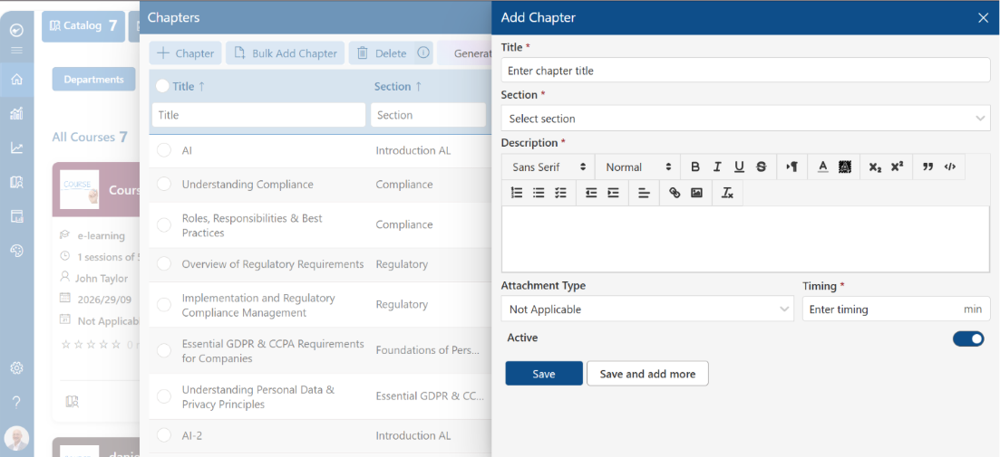
| Field | Required | Notes |
|---|---|---|
| Title | Yes | Name of the chapter. |
| Section | Yes | Select from the list of existing sections. |
| Description | Yes | Rich-text editor, same options as the section description. |
| Attachment Type | No | Defaults to Not Applicable. Other types seen in the list include Video, DOCX, and Link. |
| Timing | Yes | Duration in minutes. |
| Active | No | On by default. |
Expected result: The chapter appears in the Chapters list under the selected section, and that section’s chapter count increases by one.
2.3 Bulk Add Chapters from a File
Use Bulk Add Chapter to create many chapters in one upload.
- In the Chapters panel, select Bulk Add Chapter. The Bulk Import panel opens.
- Select Download sample file and open it.
- Complete the sample file, one row per chapter, adhering to the import rules below.
- Drag the completed file into the Attachments box (mandatory).
- If chapters have attached files, put them in one zip folder and drop it into the Zip Folder box.
- Select Upload.
- Return to the Chapters list and confirm the new chapters appear.
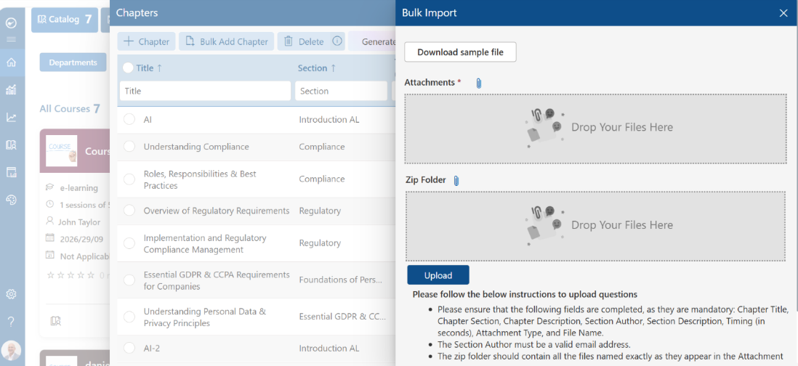
Rules for the import file:
- Mandatory fields: Chapter Title, Chapter Section, Chapter Description, Section Author, Section Description, Timing, Attachment Type, and File Name.
- Section Author must be a valid email address.
- Timing is entered in seconds in the import file (note that the Add Chapter form uses minutes).
- The zip folder must contain all files, named exactly as they appear in the Attachment (file name) column.
- Tip: Always start from the downloaded sample file rather than building your own so column headings match what the system expects.
2.4 Delete Chapters in Bulk
- In the Chapters list, tick the checkbox beside each chapter to remove. To select every chapter, tick the checkbox in the header row next to Title.
- The Delete button shows the number selected (e.g., Delete (10)).
- Select the Delete button and confirm.
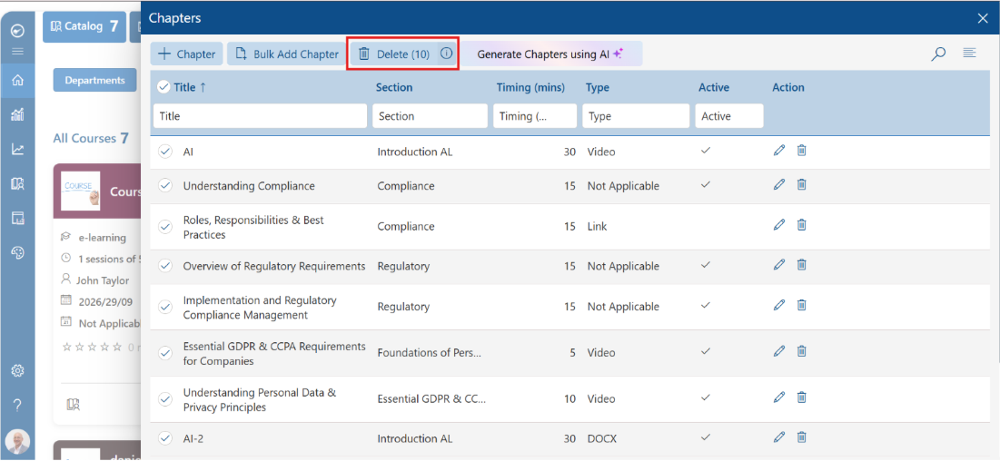
Caution: Selecting the header checkbox selects all chapters in the list. Check the count on the Delete button before confirming, because deleted chapters may not be recoverable. To delete a single chapter, use the bin icon in its Action column instead.
2.5 Generate Chapters using AI
Generate Chapters using AI drafts chapters from a topic prompt, saving time when planning a new course.
- In the Chapters panel, select Generate Chapters using AI.
- In Chapter Type Prompt, describe the topic (e.g., "Introduction to JavaScript").
- Choose the Chapter Section the new chapters will be added to.
- Set the Difficulty Level (default is Beginner).
- Enter the Number of Chapters to generate (default 1).
- Enter the Time Limit (Min) (default 5).
- Select Generate Chapters.
- Review the generated chapters in the list and edit titles, descriptions, and timing as needed.
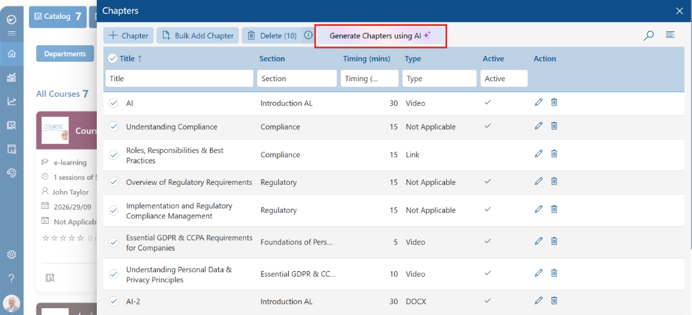

| Field | Description |
|---|---|
| Chapter Type Prompt | Free-text description of the topic or subject of the chapters. |
| Chapter Section | Existing section that will hold the generated chapters. |
| Difficulty Level | Level of the content. Beginner is the default. |
| Number of Chapters | How many chapters to generate. |
| Time Limit (Min) | Time limit in minutes applied to the generated chapters. |
Best practice: AI output is a draft. Always review generated chapters for accuracy and tone before making them available to learners.
2.6 Edit a Chapter
- Find the chapter in the list.
- Select the pencil icon in the Action column.
- Update the fields and save.
2.7 Troubleshooting: Chapters
| Issue | What to check |
|---|---|
| Cannot save a chapter | Title, Section, Description, and Timing are mandatory. |
| Section not available in the dropdown | Create the section first. |
| Bulk upload fails or rows are rejected | Confirm all mandatory columns are filled, Section Author is a valid email, and the zip folder file names match the file name column exactly. |
| Chapter durations look wrong after import | The import file uses seconds, while the form uses minutes. Check the unit used. |
| Wrong number of chapters deleted | Check the number on the Delete button, and whether the header checkbox selected the whole list. |
| AI chapters not relevant | Make the prompt more specific, and set the difficulty level, number of chapters, and time limit appropriately. |
Managing Quiz Questions
Use this article to create, bulk import, edit, and delete quiz questions. Quiz questions are the building blocks of a quiz, so create them first and then add them to a quiz.
| Field | Details |
|---|---|
| Applies to | LMS 365 Administration (assessments) |
| Audience | LMS administrators, course administrators |
3.1 View the Quiz Questions list
Open the Quiz Questions panel to see every question available for use in quizzes.
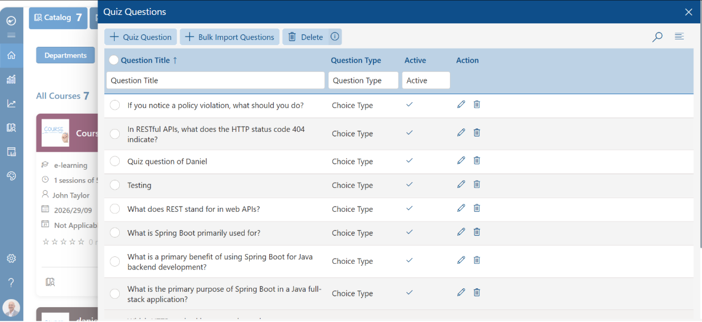
| Column / Control | Description |
|---|---|
| Question Title | The text of the question. Click the header to sort. |
| Question Type | The type of question, for example Choice Type. |
| Active | A tick means the question is active. |
| Action | Pencil icon edits the question. Bin icon deletes it. |
| Filter boxes | Type in the box under any column heading to filter the list. |
| Search icon | Opens search across the list (top right). |
| + Quiz Question | Adds a single question (see 3.2). |
| + Bulk Import Questions | Uploads many questions from a file (see 3.3). |
| Delete | Deletes all selected questions at once (see 3.4). |
3.2 Add a Quiz Question Manually
- In the Quiz Questions panel, select + Quiz Question. The Add Quiz Question panel opens on the right.
- Enter the question text in the Quiz Title field. This appears as the Question Title in the list.
- Under Answer Option’s, type the first option next to the letter A.
- Select the + icon to add another answer option (B, C, and so on). Repeat until all options are added.
- Enter the Instructions that learners should see for this question.
- Switch Required on if learners must answer this question (off by default).
- Leave Active on if the question should be available (on by default).
- Select Save, or Save and add more to save and create another question straight away.
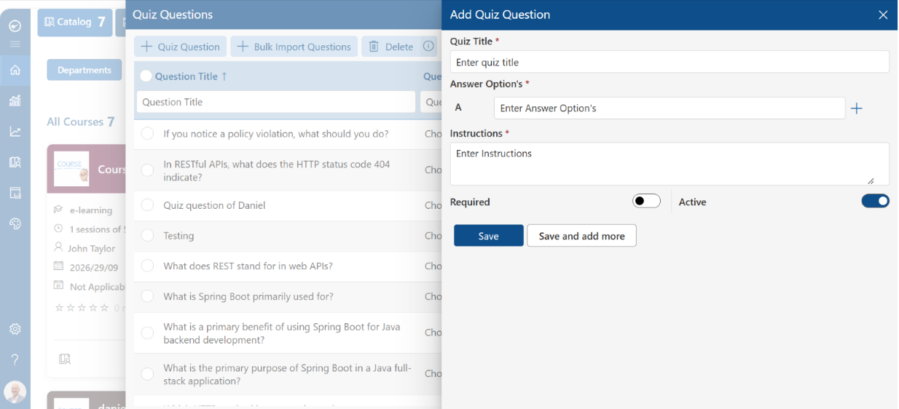
| Field | Required | Notes |
|---|---|---|
| Quiz Title | Yes | The question text. Write it as a clear, complete question. |
| Answer Option’s | Yes | Starts with option A. Use the + icon to add more options. |
| Instructions | Yes | Guidance shown to the learner, for example "Select one answer". |
| Required | No | Off by default. Turn on to make the question mandatory. |
| Active | No | On by default. |
Expected result: The question appears in the Quiz Questions list and can now be added to a quiz.
3.3 Bulk Import Quiz Questions
Use Bulk Import Questions to add many questions in a single upload.
- In the Quiz Questions panel, select + Bulk Import Questions. The Bulk Import panel opens.
- Select Download sample file and open it.
- Complete the sample file with one row per question, following the rules below.
- Drag the completed file into the Attachments box.
- Select Upload.
- Return to the Quiz Questions list and confirm the new questions appear.
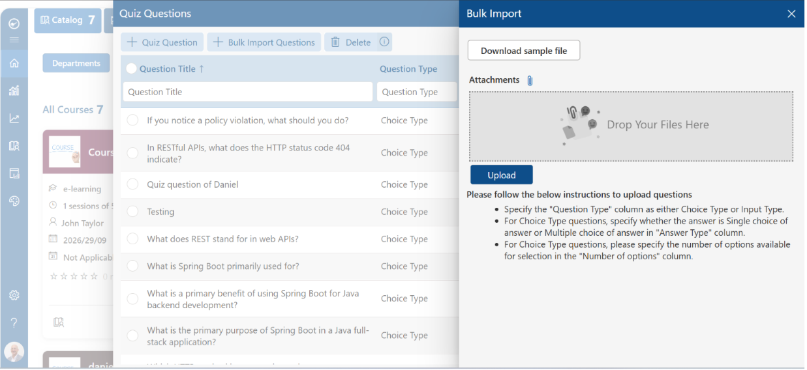
Rules for the import file:
- In the Question Type column, enter either Choice Type or Input Type.
- For Choice Type questions, use the Answer Type column to state whether the question is Single choice of answer or Multiple choice of answer.
- For Choice Type questions, enter the number of answer options in the Number of options column.
- Tip: Always start from the downloaded sample file so the column headings match what the system expects.
3.4 Delete Quiz Questions
Delete several questions at once:
- In the Quiz Questions list, tick the checkbox beside each question to remove. To select every question, tick the checkbox in the header row next to Question Title.
- The Delete button now shows how many are selected, for example Delete (22).
- Select the Delete button and confirm.
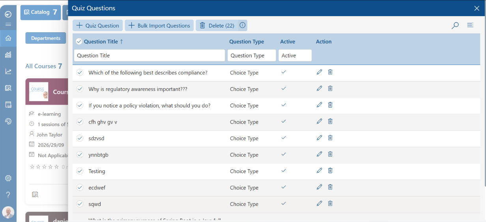
Caution: Selecting the header checkbox selects every question in the list. Check the number on the Delete button before confirming. Also check whether any of the questions are used in a quiz, because removing them may affect that quiz.
Delete a single question:
- Select the bin icon in the Action column for that question and confirm.
3.5 Edit a Quiz Question
- Find the question in the list (use the filter boxes if needed).
- Select the pencil icon in the Action column.
- Update the details and save.
3.6 Troubleshooting: Quiz Questions
| Issue | What to check |
|---|---|
| Cannot save a question | Quiz Title, at least one Answer Option, and Instructions are mandatory. |
| Bulk upload fails or rows are rejected | Check that Question Type is exactly Choice Type or Input Type, and that Answer Type and Number of options are filled in for every Choice Type row. |
| Question is missing when building a quiz | Check that the question exists in the list and that its Active tick is present. |
| Wrong number of questions deleted | Check the number on the Delete button, and whether the header checkbox selected the whole list. |
Managing Quizzes
A quiz groups a set of quiz questions under a title and description. Create your quiz questions first, then build the quiz and link the questions to it.
| Field | Details |
|---|---|
| Applies to | LMS 365 Administration (assessments) |
| Audience | LMS administrators, course administrators |
4.1 View the Quiz list
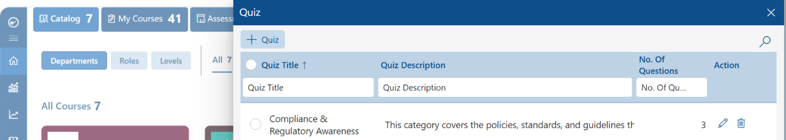
| Column / Control | Description |
|---|---|
| Quiz Title | Name of the quiz. Click the header to sort. |
| Quiz Description | Short description of what the quiz covers. |
| No. Of Questions | Number of questions currently linked to the quiz. |
| Action | Pencil icon edits the quiz. Bin icon deletes it. |
| Filter boxes | Type in the box under any column heading to filter the list. |
| + Quiz | Opens the Add Quiz form (see 4.2). |
4.2 Add a Quiz
- In the Quiz panel, select + Quiz. The Add Quiz panel opens on the right.
- Enter the Quiz Title.
- Enter the Quiz Description.
- Under Quiz Questions, select + Add and choose the questions to include in this quiz.
- Check that the selected questions appear in the Quiz Questions table, which shows each Question Title and Type.
- Select Save.
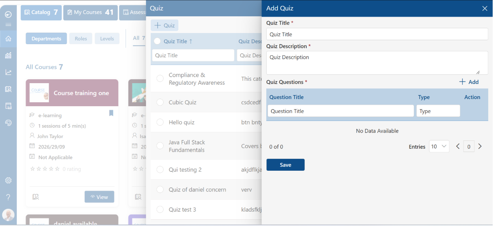
| Field | Required | Notes |
|---|---|---|
| Quiz Title | Yes | Name of the quiz, for example "Compliance & Regulatory Awareness". |
| Quiz Description | Yes | Explains the purpose or topic of the quiz. |
| Quiz Questions | Yes | Questions linked to this quiz. Use + Add to link them. Before any are added, the table shows "No Data Available". |
Expected result: The quiz appears in the Quiz list, and the No. Of Questions column shows how many questions were linked.
4.3 Edit or Delete a Quiz
- In the Quiz list, find the quiz.
- Select the pencil icon in the Action column to edit it, then save your changes.
- To remove a quiz, select the bin icon and confirm.
Caution: Check that a quiz is not in use before deleting it, as deleting it may affect any course content that uses it.
4.4 How Quiz Questions and Quizzes are Linked
Quiz questions and quizzes depend on each other. Keep these points in mind:
- A quiz needs at least one linked question. The Quiz Questions field is mandatory when you save a quiz.
- Questions must exist in the Quiz Questions list before they can be linked to a quiz.
- The No. Of Questions value in the Quiz list shows how many questions are linked to each quiz.
- If you change or remove a question that is used in a quiz, check the quiz afterwards to make sure it still has the questions you expect.
Recommended order of work:
- Create the quiz questions, one by one or by bulk import.
- Create the quiz and link the questions to it.
- Open the quiz and confirm the question count and question list are correct.
4.5 Troubleshooting: Quizzes
| Issue | What to check |
|---|---|
| Cannot save the quiz | Quiz Title, Quiz Description, and at least one linked question are mandatory. |
| No questions to choose from | Create quiz questions first. Also check that the questions you expect are in the list and active. |
| No. Of Questions shows the wrong number | Open the quiz and check which questions are linked. Questions may have been removed or not added. |
| A quiz no longer shows a question | The question may have been deleted from the Quiz Questions list. Re-create it and link it again. |
Managing Courses
5.1 Accessing the Courses List
The Courses list is the starting point for all course administration. It shows every course created in the portal, along with its enrollment type, owner, creation date, type, publish status, and whether it is active.
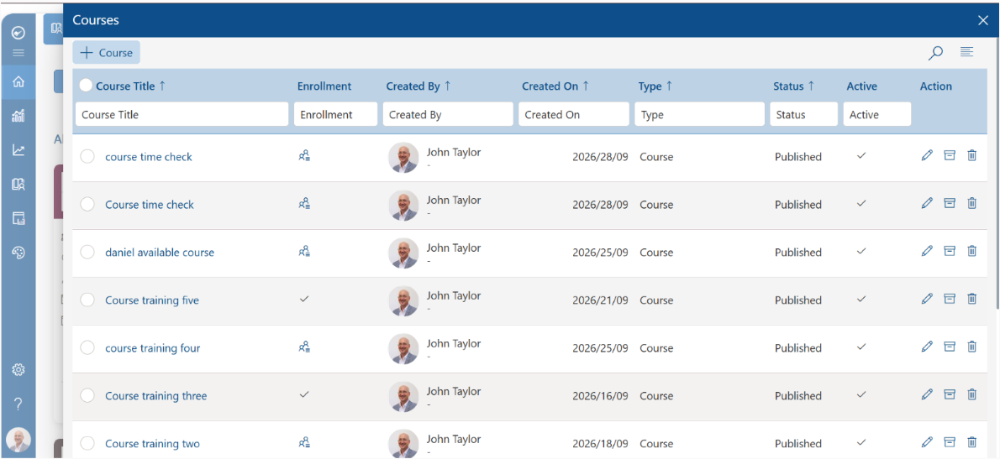
| Column | Description |
|---|---|
| Course Title | The course name. Click it to open the course for editing. |
| Enrollment | Icon indicating the enrollment method configured for the course (e.g., manual, self-enroll). |
| Created By | The admin or author who created the course. |
| Created On | The date the course was created. |
| Type | The course type, e.g. Course. |
| Status | Draft or Published. |
| Active | Whether the course is currently active and available to learners. |
| Action | Inline icons to edit, assign/manage, or delete the course. |
Tip: Use the search boxes under each column header to filter the list — for example, type a name into Created By to find all courses authored by a specific person.
To begin building a new course, click + Course at the top left of the list. This opens the Add Course wizard.
5.2 Overview Tab
The Add Course wizard opens on the Overview tab, where you define the course's title, description, and classification. The wizard has six tabs across the top — Overview, Content, Assessment, Quiz, Preview, and Publish — completed in order.
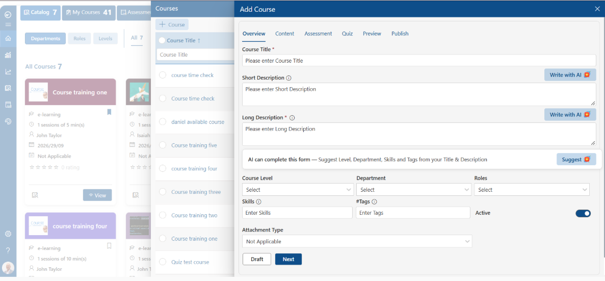
| Field | Description |
|---|---|
| Course Title * | The name learners will see in the catalog. Required. |
| Short Description | A brief summary shown on the course card. Use Write with AI to draft it from the title. |
| Long Description * | The full course description shown on the course detail page. Required; also supports Write with AI. |
| Course Level / Department / Roles | Classification dropdowns used for catalog filtering and targeting. |
| Skills / #Tags | Free-text skill and tag entries used for search and recommendations. |
| Active | Toggle controlling whether the course is enabled once published. |
| Attachment Type | Defines whether supporting files can be attached to the course (default: Not Applicable). |
AI assist: Once a Title and Description are entered, click Suggest next to “AI can complete this form” to have the system recommend Level, Department, Skills, and Tags automatically.
Click Draft at any point to save your progress without publishing, or Next to move on to the Content tab.
5.3 Content Tab — Assembling Sections
The Content tab is where the course's Section Blocks are assembled. There are three ways to populate this tab: reuse an existing section, generate sections with AI, or create a brand-new section.
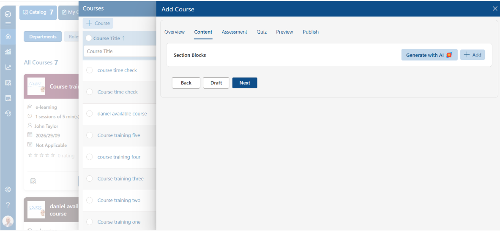
5.3.1 Reusing an Existing Section
Click + Add to open the section library, which lists every section already created across courses, with its chapter count and author.
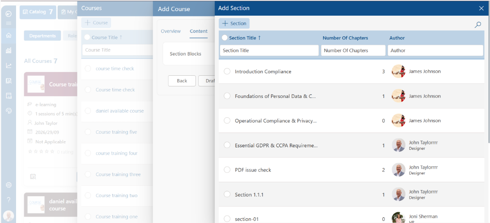
| Column | Description |
|---|---|
| Section Title | The name of the existing section. |
| Number of Chapters | How many chapters the section currently contains. |
| Author | Who created the section. |
5.3.2 Generating Sections with AI
Click Generate with AI to have the system draft one or more sections automatically based on guidance, difficulty, section count, chapters per section, and time per chapter.
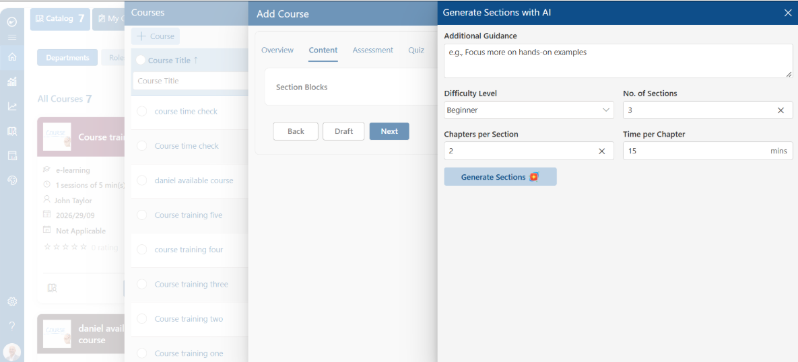
5.3.3 Creating a New Section Manually
From the section library, click + Section to open a blank Add Section form, configure Title, Author, Description, and Active switch, then save.
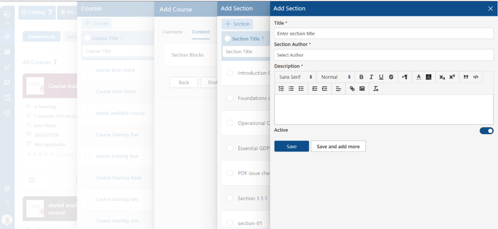
5.4 Assessment Tab
The Assessment tab follows the same pattern: reuse an existing assessment from the library (+ Add), generate one with AI, or add a new one from scratch.
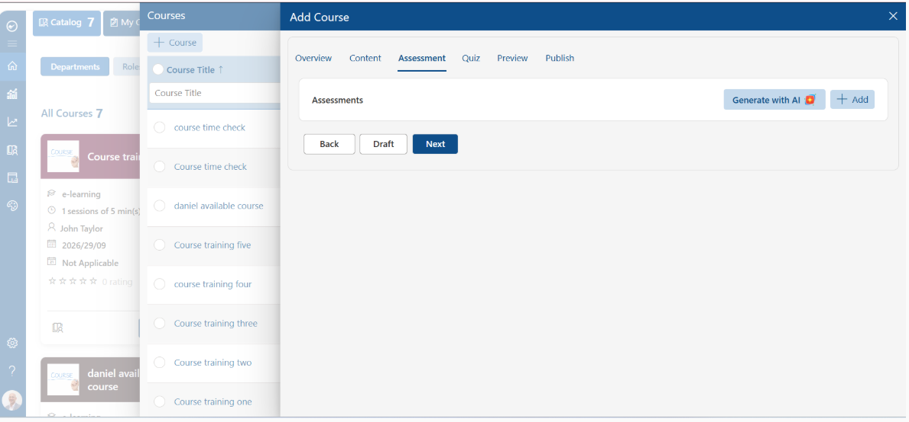
5.5 Quiz Tab
The Quiz tab works the same way: reuse an existing quiz, generate one with AI, or add a new one.
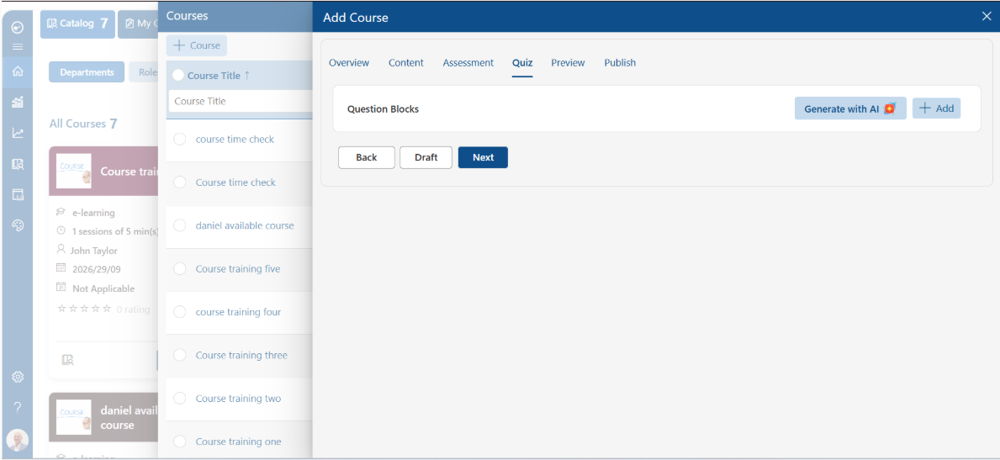
5.6 Preview Tab
Configure Thumbnail Image (200 × 200 px), Banner Image (1,100 × 150 px), Card Theme Color, and Thumbnail Border while reviewing the live card preview.
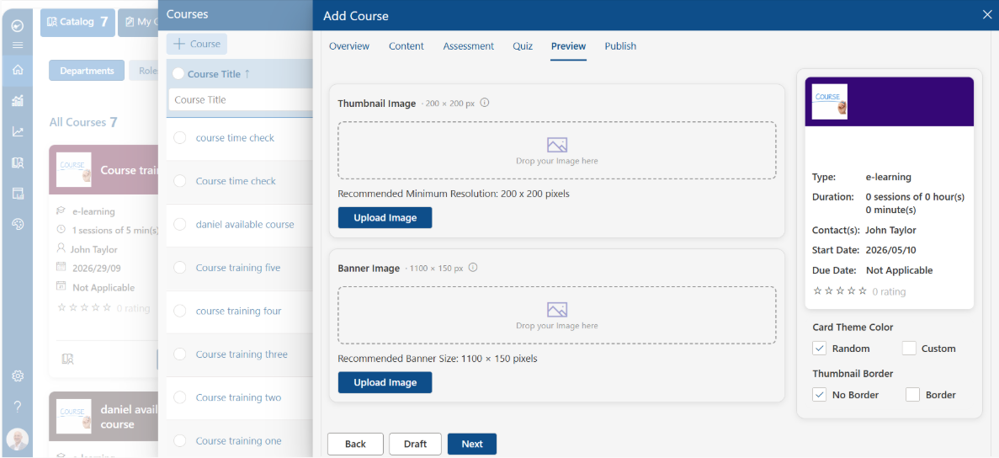
5.7 Publish Tab
Review the full course recap, set enrollment units, completion deadlines, expiry dates, author assignment, certification, and course rating options before publishing.
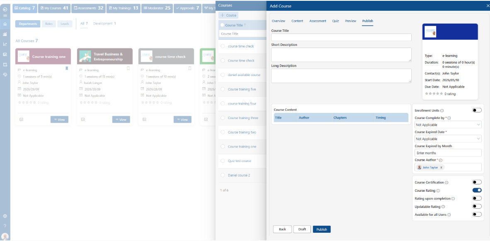
Training Module
The Training module lets administrators package one or more courses, live sessions, or in-person workshops into a single structured learning experience called a Training. Unlike a standalone course, a Training can combine multiple course blocks, carry its own assessments and knowledge-check quizzes, issue a certificate on completion, and be tracked and reported on as a single unit. This article covers where to find the Training module, the delivery types available, and the complete step-by-step process for building, previewing, and publishing a Training.
Note: For the latest article, screenshots, and video walkthroughs, see Learn about Training at the end of this guide.
1. Accessing the Training Module
The Training module can be reached two ways, depending on whether you are assigning/consuming trainings or building them.
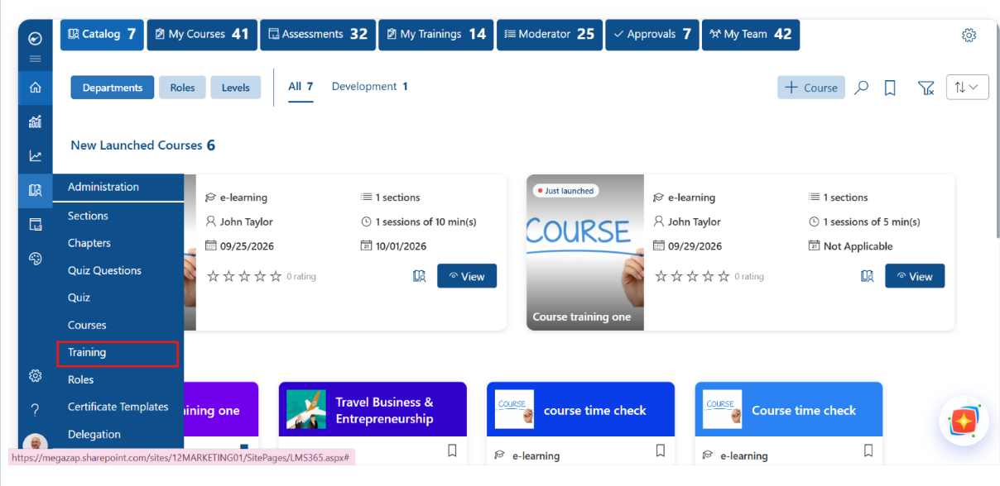
Figure 1. The Catalog page, showing the My Trainings tab count for learners and the Training item under Administration (left navigation) for admins.
1.1 For Learners — Catalog
The Catalog home page has a row of tabs across the top — Catalog, My Courses, Assessments, My Trainings, Moderator, Approvals, and My Team — each carrying a live badge showing how many items apply to the signed-in user. Selecting My Trainings opens a personal list of every Training the learner has been assigned, together with its status and due date.
Newly published trainings can also surface directly on the Catalog home page — for example, in a “New Launched Courses” carousel — presented as a tile showing the delivery mode, number of sections, contact/instructor, launch and due dates, and current star rating.
1.2 For Administrators — Administration
From the left-hand navigation rail, open the Administration area (the library/book icon). This section groups together Sections, Chapters, Quiz Questions, Quiz, Courses, Training, Roles, Certificate Templates, and Delegation. Selecting Training opens the Training management grid, which lists every training that exists in the tenant.
| Grid Column | What It Shows |
|---|---|
| Training Title | The name of the training. Click the title to open it. |
| Enrollment | Icon showing/managing who is enrolled in the training. |
| Created By | The author's name, photo, and role. |
| Created On | The date the training record was created. |
| Type | Digital Course Training, Live Online Training, or Onsite Training. |
| Status | Draft or Published. |
| Active | Whether the training is currently assignable/visible to learners. |
| Action | Per-row Edit, Archive, and Delete icons — see Section 4. |
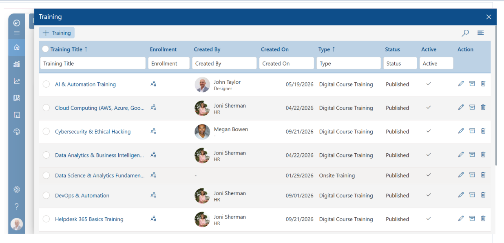
Figure 2. The Training management grid under Administration > Training, listing every training in the tenant.
Use the + Training button to start a new training, the search icon to find one quickly, and the filter boxes beneath each column header to narrow the list — handy once the tenant has a large number of trainings.
2. Training Delivery Types
Every training is built as one of three delivery types. The type is chosen when the training is first created and shapes which tools appear later in the build wizard.
| Type | Description |
|---|---|
| Digital Course Training | Fully self-paced, e-learning delivery. One or more existing courses are combined into Course Blocks to form a single training that learners work through online at their own pace. |
| Live Online Training | Instructor-led training delivered virtually at a scheduled date and time — for example, a webinar or virtual classroom session. |
| Onsite Training | Instructor-led training delivered in person at a physical location. It typically carries a start date but no fixed digital due date, since completion is tracked through attendance rather than course progress. |
Note: Course Blocks (Section 3.2) apply specifically to Digital Course Training. Live Online Training and Onsite Training each use their own dedicated tab instead — Section 3.3 and Section 3.4, respectively — to schedule the session. It's best to confirm the Training Type on the Overview tab before building out the rest of the training.
3. Creating a New Training
From the Training grid, click + Training to launch the Add Training wizard. Every training starts on the same Overview tab (Section 3.1), where the Training Type is chosen. Once that choice is made, the rest of the wizard follows one of three paths:
- Digital Course Training — Content → Assessment → Quiz → Preview → Publish (Section 3.2).
- Live Online Training — Live Online Training → Preview → Publish (Section 3.3).
- Onsite Training — Onsite Training → Preview → Publish (Section 3.4).
Progress can be saved as a Draft from almost any tab and finished later. Everything up through Overview is identical no matter which type is chosen — the sections below cover Overview once, then each path in full.
3.1 Overview Tab
- Training Title* — required. A clear, learner-facing name for the training.
- Short Description — a concise one- to two-sentence summary shown on catalog tiles. Use Rephrase with AI to have the system tighten or polish the wording automatically.
- Long Description* — required. The full description shown on the training's detail page; also supports Rephrase with AI.
- Training Type — choose Digital Course Training, Live Online Training, or Onsite Training (see Section 2).
- Training Level, Department, Roles, Skill — optional classification fields used to target the right audience and improve catalog searchability.
- Suggest (AI) — automatically proposes Training Level, Department, Roles, and Skill tags based on the Title and Description already entered, saving manual tagging time.
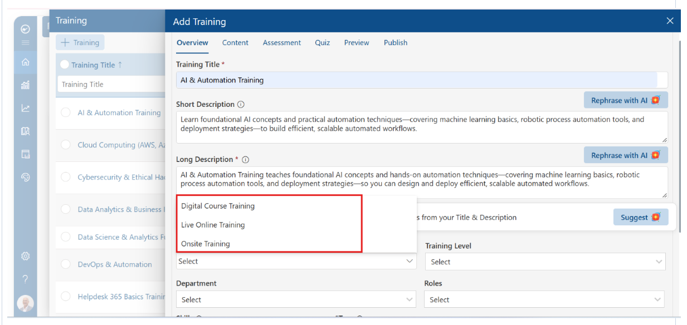
Figure 3. The Overview tab of the Add Training wizard, including the Training Type selector.
Note: Once Training Type is set here and Next is clicked, the wizard continues into one of the three paths below — Section 3.2 for Digital Course Training, Section 3.3 for Live Online Training, or Section 3.4 for Onsite Training.
3.2 Digital Course Training Path
Selecting Digital Course Training on Overview leads through five more tabs, covered in full below: Content, Assessment, Quiz, Preview, and Publish.
3.2.1 Content Tab — Combining Courses into a Training
This tab is where the defining behavior of Digital Course Training happens: multiple standalone courses are combined into Course Blocks, and together they form one single training that is assigned, tracked, and reported on as a unit.
- Add Courses — under Course Blocks, click Add Courses to open the course picker.
- Course picker — lists every course already in the library (Course Title, Created By, Created On) with a checkbox beside each one, so multiple courses can be selected at once.
- + Course — if the course you need doesn't exist yet, create one on the fly from within this panel without leaving the wizard.
- Sequencing — each selected course becomes a sequential block inside the training; learners move through the blocks in order to complete the overall training.
- Navigation — use Back to return to Overview, Draft to save progress without publishing, or Next to continue to Assessment.
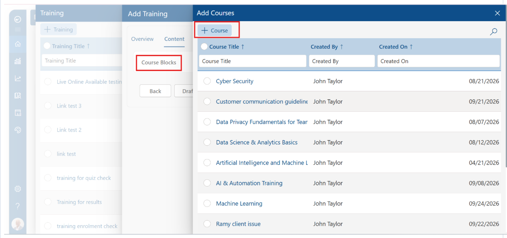
Figure 4. The Content tab's Course Blocks area and the Add Courses picker used to select existing courses.
3.2.2 Assessment Tab
Assessments are formal, graded evaluations used to confirm learner understanding at key points in the training.
| Field | Description |
|---|---|
| Assessment Title | The name of the assessment. |
| Assessment Section | The topic area(s) it covers. |
| Assessment Instructor | The reviewer/proctor, assigned via Select Users. |
| Total Question | The number of questions in the assessment. |
| Time Limit | How long learners have to complete it. |
- Generate with AI — drafts assessment content automatically from the training/course material.
- + Add — builds an assessment manually.
- Multiple assessments — a training can carry more than one assessment — for example, a Compliance Knowledge Assessment and a separate Regulatory Standards Assessment covering different topic areas.
- Removing an assessment — use the delete icon in its row at any time.
- Navigation — use Back, Draft, Next, or jump directly to Review & Publish once you're satisfied.
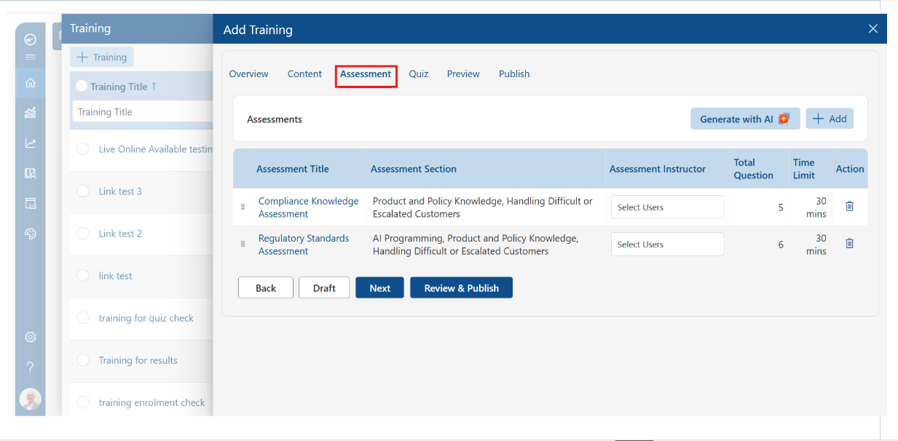
Figure 5. The Assessment tab, showing two assessments attached to a training.
3.2.3 Quiz Tab
Quizzes are lighter-weight knowledge checks, distinct from formal Assessments, used to reinforce learning throughout the training.
- Generate with AI — auto-generates a set of questions for a Question Block.
- Rearrange Quizzes — reorders blocks by dragging them into the desired sequence.
- Block detail — each quiz block shows its title and question count (for example, Compliance & Regulatory Awareness with 3 questions, or Java Full Stack Fundamentals with 4 questions) and can be removed with its delete icon.
- Navigation — use Back, Draft, Next, or Review & Publish to continue.
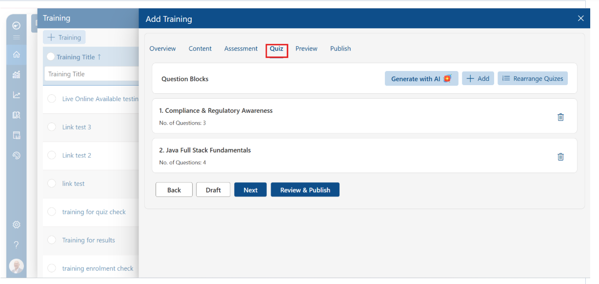
Figure 6. The Quiz tab, showing two Question Blocks attached to a training.
3.2.4 Preview Tab — Thumbnail and Banner Artwork
| Element | Recommended Size / Purpose |
|---|---|
| Thumbnail Image | 200 × 200 px. Used as the training's tile icon throughout the catalog. Upload, Replace, or Remove it here. |
| Banner Image | 1100 × 150 px. Displayed across the top of the training's detail page. Upload, Replace, or Remove it here. |
The right-hand preview panel shows exactly how learners will see the training card, including its Type, Duration (calculated automatically from the total length of its course/session blocks), Contact(s), Start Date, Due Date, and current star rating.
- Card Theme Color — choose Random to let the system assign a background color automatically, or Custom to select a specific brand color for the tile.
- Thumbnail Border — choose No Border for a clean edge-to-edge thumbnail, or Border to frame it.
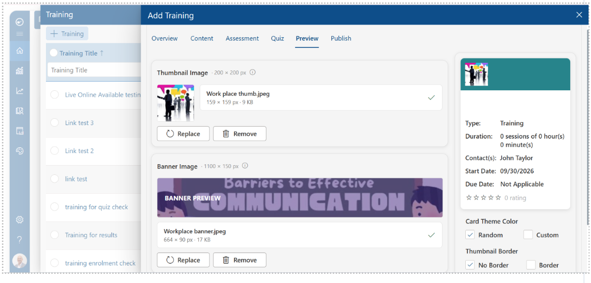
Figure 7. The Preview tab, showing thumbnail and banner upload alongside the live learner-facing preview.
3.2.5 Publish Tab — Final Setup and Going Live
Before publishing, the Publish tab recaps everything configured earlier for a final check: an Assessment Content table (Assessment Title, Assessment Section, Total Questions, Time Limit) and a Quiz Content table (Quiz Title, number of questions, Pass %) for every block attached.
| Setting | Effect |
|---|---|
| Training Author* | Required. The person shown to learners as the training's owner/point of contact (defaults to the creator and can be changed). |
| Training Certification | Toggle on to automatically issue learners a certificate when they complete the training. |
| Certificate Templates* | Required whenever Certification is enabled. Choose the certificate design, or click View Templates to browse the full gallery. |
| Training Rating | Toggle on to let learners rate the training. |
| Rating upon completion | Toggle on to prompt learners for a rating immediately after they finish. |
| Updatable Rating | Toggle on to allow learners to revise a rating they've already submitted. |
| Available for all Users | Toggle on to publish tenant-wide; toggle off to restrict to the audience set on the Overview tab. |
Note: Click Draft to save the training without making it visible to learners, or Publish to make it live and assignable immediately. Both buttons remain available from this tab.
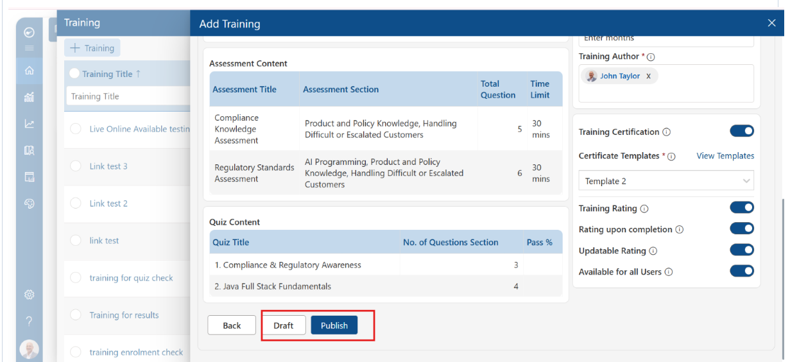
Figure 8. The Publish tab's final review, with the Draft and Publish actions highlighted.
3.3 Live Online Training Path
Selecting Live Online Training on Overview leads through three more tabs, covered in full below: Live Online Training, Preview, and Publish. Content, Assessment, and Quiz don't apply to this type.
3.3.1 Live Online Training Tab — Scheduling a Live Session
This tab replaces Content, Assessment, and Quiz entirely — it's where the virtual session itself is scheduled.
| Field | Description |
|---|---|
| Meeting Type* | Required. Choose how the session will be hosted — MS Teams or Others (a different conferencing platform). |
| Meeting Name* | Required. The name learners will see for the scheduled session. |
| Meeting Description* | Required. Full session details, formatted with the built-in rich-text editor (bold, italic, underline, links, numbered/bulleted lists). |
| Webinar Attachment Type | Optional. Attach supporting webinar material to the session. |
| Attendees* | Required. Choose who can join — All Users, specific Groups, or a Custom selection of learners. |
| Start Date & Time* | Required. The date and time the live session begins. |
| End Date & Time* | Required. The date and time the live session ends. |
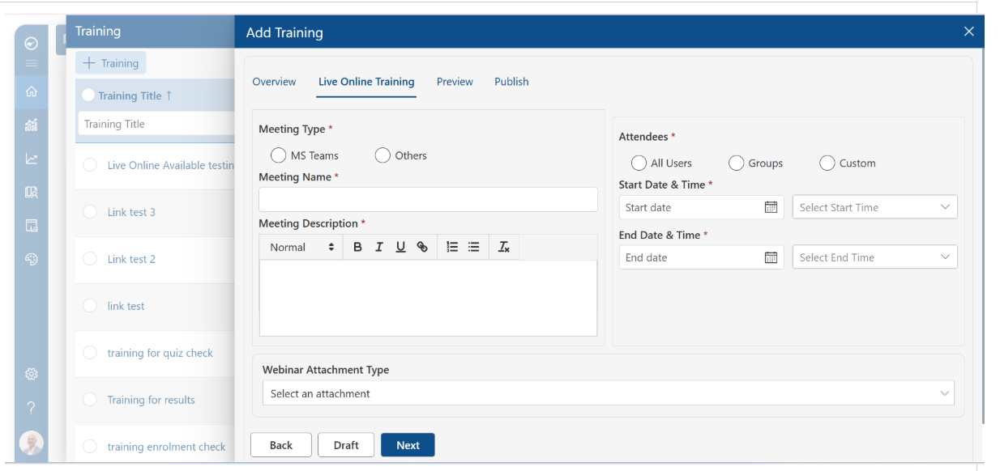
Figure 9. The Live Online Training tab — meeting details on the left, attendees and schedule on the right.
Note: A Live Online Training's build wizard has no separate Assessment or Quiz tab — this one tab covers everything needed to schedule the session.
- Navigation — use Back to return to Overview, Draft to save progress without publishing, or Next to continue to Preview.
3.3.2 Preview Tab — Thumbnail and Banner Artwork
The Preview tab works the same way regardless of Training Type: upload thumbnail and banner artwork and confirm the learner-facing preview before publishing.
| Element | Recommended Size / Purpose |
|---|---|
| Thumbnail Image | 200 × 200 px. Used as the training's tile icon throughout the catalog. Upload, Replace, or Remove it here. |
| Banner Image | 1100 × 150 px. Displayed across the top of the training's detail page. Upload, Replace, or Remove it here. |
The right-hand preview panel shows exactly how learners will see the training card, including its Type, Duration, Contact(s), Start Date, Due Date, and current star rating.
- Card Theme Color — choose Random to let the system assign a background color automatically, or Custom to select a specific brand color for the tile.
- Thumbnail Border — choose No Border for a clean edge-to-edge thumbnail, or Border to frame it.
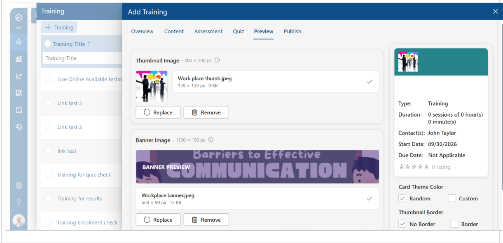
Figure 10. The Preview tab is the same for every Training Type — shown here for a Live Online Training.
3.3.3 Publish Tab — Final Setup and Going Live
The Publish tab also works the same way regardless of Training Type, recapping everything configured earlier for a final check. Since a Live Online Training carries no Assessment or Quiz blocks, its recap reflects the session and audience details set on the Live Online Training tab instead.
| Setting | Effect |
|---|---|
| Training Author* | Required. The person shown to learners as the training's owner/point of contact (defaults to the creator and can be changed). |
| Training Certification | Toggle on to automatically issue learners a certificate when they complete the training. |
| Certificate Templates* | Required whenever Certification is enabled. Choose the certificate design, or click View Templates to browse the full gallery. |
| Training Rating | Toggle on to let learners rate the training. |
| Rating upon completion | Toggle on to prompt learners for a rating immediately after they finish. |
| Updatable Rating | Toggle on to allow learners to revise a rating they've already submitted. |
| Available for all Users | Toggle on to publish tenant-wide; toggle off to restrict to the audience set on the Overview tab. |
Note: Click Draft to save the training without making it visible to learners, or Publish to make it live and assignable immediately.
3.4 Onsite Training Path
Selecting Onsite Training on Overview leads through three more tabs, covered in full below: Onsite Training, Preview, and Publish. Content, Assessment, and Quiz don't apply to this type.
3.4.1 Onsite Training Tab — Scheduling an In-Person Session
This tab replaces Content, Assessment, and Quiz entirely — similar in spirit to Live Online Training, but tailored for a session held at a physical location.
| Field | Description |
|---|---|
| Meeting Name* | Required. The name learners will see for the scheduled session. |
| Meeting Description* | Required. Full session details, formatted with the built-in rich-text editor (bold, italic, underline, links, numbered/bulleted lists). |
| Location* | Required. The physical venue or address where the session will be held. |
| Attendees* | Required. Choose who can join — All Users, specific Groups, or a Custom selection of learners. |
| Start Date & Time* | Required. The date and time the session begins. |
| End Date & Time* | Required. The date and time the session ends. |
| Block Calendar | Optional toggle. When turned on, reserves this time on attendees' calendars for the session. |
| Attachment Type | Optional. Attach supporting material to the session. |
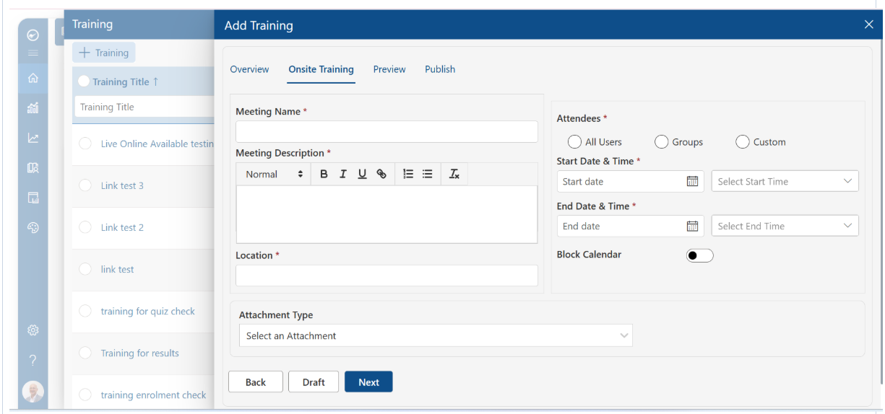
Figure 11. The Onsite Training tab — session and location details on the left, attendees, schedule, and Block Calendar on the right.
Note: Unlike Live Online Training, there is no Meeting Type selector here since the session happens in person — Location takes its place, and a Block Calendar toggle is available to reserve attendees' time.
- Navigation — use Back to return to Overview, Draft to save progress without publishing, or Next to continue to Preview.
3.4.2 Preview Tab — Thumbnail and Banner Artwork
The Preview tab works the same way regardless of Training Type: upload thumbnail and banner artwork and confirm the learner-facing preview before publishing.
| Element | Recommended Size / Purpose |
|---|---|
| Thumbnail Image | 200 × 200 px. Used as the training's tile icon throughout the catalog. Upload, Replace, or Remove it here. |
| Banner Image | 1100 × 150 px. Displayed across the top of the training's detail page. Upload, Replace, or Remove it here. |
The right-hand preview panel shows exactly how learners will see the training card, including its Type, Duration, Contact(s), Start Date, Due Date, and current star rating.
- Card Theme Color — choose Random to let the system assign a background color automatically, or Custom to select a specific brand color for the tile.
- Thumbnail Border — choose No Border for a clean edge-to-edge thumbnail, or Border to frame it.
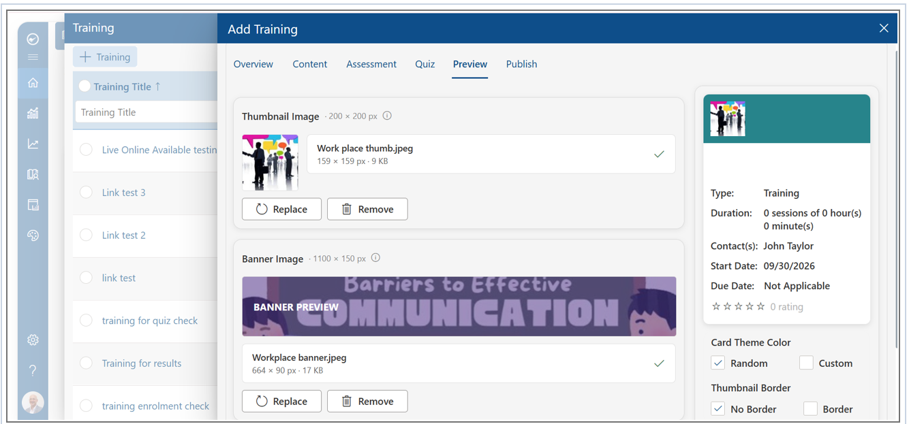
Figure 12. The Preview tab is the same for every Training Type — shown here again for an Onsite Training.
3.4.3 Publish Tab — Final Setup and Going Live
The Publish tab also works the same way regardless of Training Type, recapping everything configured earlier for a final check. Since an Onsite Training carries no Assessment or Quiz blocks, its recap reflects the session and audience details set on the Onsite Training tab instead.
| Setting | Effect |
|---|---|
| Training Author* | Required. The person shown to learners as the training's owner/point of contact (defaults to the creator and can be changed). |
| Training Certification | Toggle on to automatically issue learners a certificate when they complete the training. |
| Certificate Templates* | Required whenever Certification is enabled. Choose the certificate design, or click View Templates to browse the full gallery. |
| Training Rating | Toggle on to let learners rate the training. |
| Rating upon completion | Toggle on to prompt learners for a rating immediately after they finish. |
| Updatable Rating | Toggle on to allow learners to revise a rating they've already submitted. |
| Available for all Users | Toggle on to publish tenant-wide; toggle off to restrict to the audience set on the Overview tab. |
Note: Click Draft to save the training without making it visible to learners, or Publish to make it live and assignable immediately.
4. Managing Existing Trainings
Every existing training can be maintained from the Training grid using the per-row action icons:
- Edit (pencil) — reopens the Add Training wizard with all existing settings, so content, assessments, quizzes, or artwork can be updated at any time.
- Archive (box icon) — retires a training from active use without permanently deleting it or its history.
- Delete (trash icon) — permanently removes the training. This cannot be undone, so archiving is the safer choice if the training may be needed again later.
Use the filter row beneath the column headers — Training Title, Enrollment, Created By, Created On, Type, Status, Active — to quickly search or narrow the list once the tenant has many trainings.
5. End-User Experience
Learners find every training assigned to them under Catalog > My Trainings, where a badge shows the current count. Depending on the Training Type, learners either:
- work through each course block at their own pace (Digital Course Training),
- attend a scheduled virtual session (Live Online Training), or
- attend a scheduled in-person session (Onsite Training).
Any attached Quiz or Assessment must be completed as part of the training. If Training Certification is enabled, learners automatically receive their certificate once all requirements are met — and, if Training Rating is enabled, may be prompted to rate the training, including updating that rating later if Updatable Rating is turned on.
6. Best Practices
- Decide the Training Type first — it determines which content tools apply, so it's best confirmed on the Overview tab before building out the rest of the training.
- Use Draft liberally — save progress from any tab without exposing an unfinished training to learners, and resume later from the Training grid.
- Keep the Short Description tight — it's what appears on catalog tiles, so a concise one- or two-sentence summary reads better than a long paragraph; use Rephrase with AI if it needs polishing.
- Match artwork to spec — following the recommended 200×200 px thumbnail and 1100×150 px banner dimensions keeps tiles and detail pages consistent across the catalog.
- Archive rather than delete — once a training has enrollment history, archiving preserves records and reporting, whereas deleting removes them permanently.
7. Frequently Asked Questions
What's the difference between an Assessment and a Quiz?
Assessments are formal, graded evaluations — each has a defined instructor, question count, and time limit, and can be organized by topic Section. Quizzes are lighter-weight, topic-based knowledge checks built from reusable Question Blocks, used primarily to reinforce learning rather than formally grade it.
Can a single training include more than one Assessment or Quiz?
Yes. Both the Assessment and Quiz tabs support adding multiple blocks, so a training can carry two or more assessments covering different topics alongside two or more quiz blocks.
What happens if I click Draft instead of Publish?
Draft saves everything configured so far without making the training visible or assignable to learners. It remains in the Training grid with a Status of Draft, and can be reopened with Edit at any time to finish and publish it later.
Do I need a Certificate Template if Training Certification is off?
No — Certificate Templates only becomes a required field once Training Certification is toggled on.
Can I attach an Assessment or Quiz to a Live Online or Onsite Training?
Not from the Add Training wizard. Assessment and Quiz tabs only appear when Training Type is Digital Course Training. Live Online Training and Onsite Training each have a single dedicated tab instead, covering meeting or session details, attendees, and scheduling (Sections 3.3 and 3.4).
What's the difference between the Live Online Training and Onsite Training tabs?
They're built the same way, but Live Online Training asks for a Meeting Type (MS Teams or Others) since the session is virtual, while Onsite Training asks for a Location instead and adds a Block Calendar toggle to reserve attendees' time for the in-person session.
8. Learn More
Managing Roles
Roles classify learners and content for targeting — the same Roles values offered in the Course Level / Department / Roles dropdowns on the Overview tab are managed here. Open this list from the Roles tab alongside Departments and Levels at the top of the Catalog.
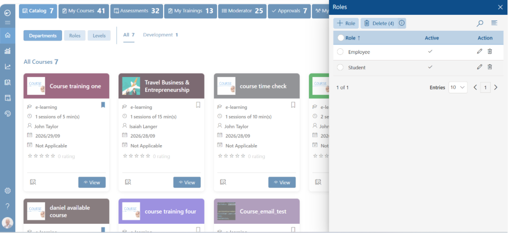
| Column | Description |
|---|---|
| Role | The role name, used to target content and assign permissions (e.g., Employee, Student). |
| Active | Whether the role is currently enabled for use. |
| Action | Inline icons to edit or delete the role. |
Tip: Select the checkboxes next to one or more roles to enable the Delete button at the top of the list — the number in parentheses shows how many roles are currently selected for bulk deletion.
Click + Role to create a new role, or use the pencil icon to edit an existing one.
Certificate Templates
Certificate Templates provide standardized completion awards automatically issued to learners upon completing certified courses or training programs. Select a template design from the global template repository or configure custom branding.
Managing Delegations
Delegation lets one user (the Delegator) temporarily hand off their course-related responsibilities — such as approvals — to another user (the Delegatee) for a defined date range.
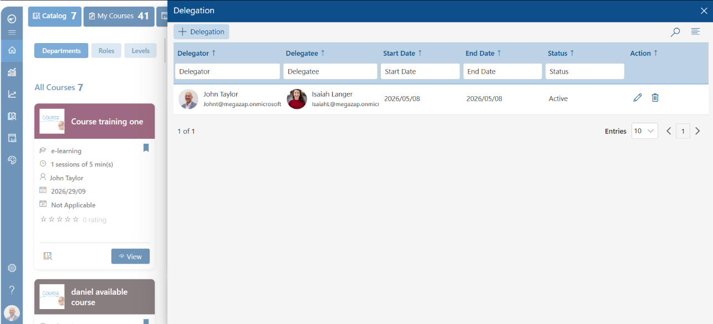
| Column | Description |
|---|---|
| Delegator | The user handing off their responsibilities. |
| Delegatee | The user receiving the delegated responsibilities. |
| Start Date | The date the delegation takes effect. |
| End Date | The date the delegation ends. |
| Status | Active or Inactive, based on the toggle set when the delegation was created. |
| Action | Inline icons to edit or delete the delegation. |
Adding a Delegation
Click + Delegation to open the Add Delegation form.
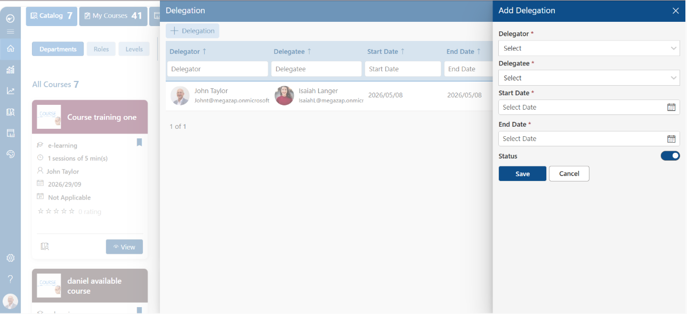
| Field | Description |
|---|---|
| Delegator * | The user delegating their responsibilities. Required. |
| Delegatee * | The user who will receive the delegated responsibilities. Required. |
| Start Date * | The date the delegation becomes effective. Required. |
| End Date * | The date the delegation ends. Required. |
| Status | Toggle controlling whether the delegation is active once saved. |
Click Save to create the delegation, or Cancel to discard it.